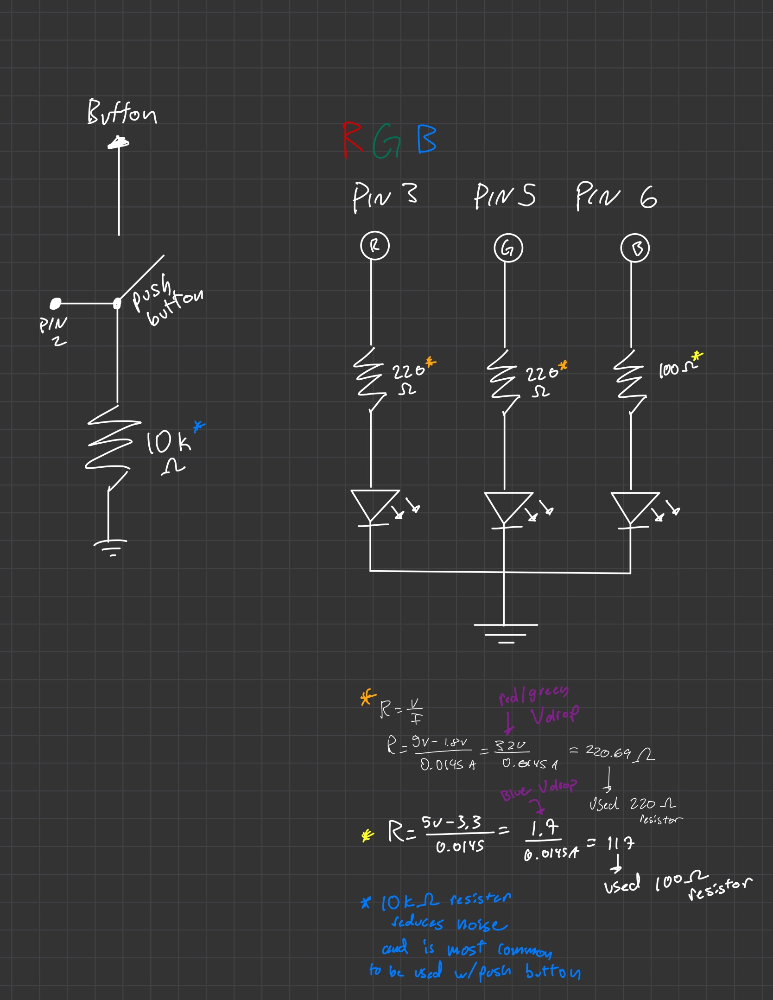
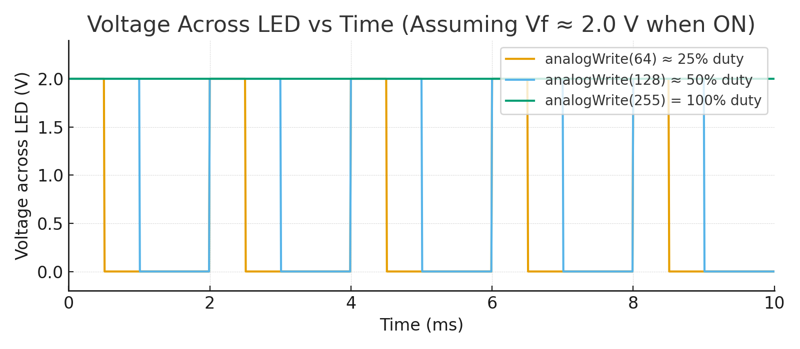

Overview
This project uses an Arduino, three LEDs, and a button to show how digital and analog signals work together. The circuit uses digitalRead() to detect button input, digitalWrite() to turn LEDs on and off, and analogWrite() for smooth color fades. The documentation includes the schematic, breadboard photo, firmware code, and a GIF showing the circuit in action.
Schematic (with Resistor Calculation)

This schematic shows three LEDs, each with its own resistor (220 Ω for red and green, 100 Ω for blue). The button connects to pin 2 using INPUT_PULLUP, allowing the Arduino to detect when it’s pressed.
Breadboard Circuit

This image shows my breadboard circuit with three LEDs and a button connected as described in the schematic. The white LED is made up of three separate LEDs combined.
Firmware Code
Note: Based on Arduino’s basic sketch template. Minor fixes were applied for correctness (using pinMode() to set LED pins as OUTPUT, and enabling INPUT_PULLUP for a stable button input if wired to ground).
// --- Note on template & wiring ---
// Based on Arduino’s basic sketch template. Comments are placed ABOVE each line.
// Pin setup
// Define the digital pin used for the button
const int buttonPin = 2;
// Store the current button state (HIGH = pressed in this wiring)
int buttonState = 0;
// Runs once at startup
// Configure pin 3 as OUTPUT for the Blue LED (PWM-capable)
void setup() {
// Set Blue LED pin
pinMode(3, OUTPUT);
// Set Green LED pin
pinMode(5, OUTPUT);
// Set Red LED pin
pinMode(6, OUTPUT);
// Enable internal pull-up on the button pin (reads HIGH when not connected to GND)
pinMode(buttonPin, INPUT_PULLUP);
}
// Runs repeatedly
// Read the button state (HIGH = pressed for your wiring)
void loop() {
// Capture current button value
buttonState = digitalRead(buttonPin);
// If the button is pressed, fade between colors (red→green→blue→red)
if (buttonState == HIGH) {
// Fade from red to green while button remains pressed
for (int i = 0; i <= 255 && digitalRead(buttonPin) == HIGH; i++) {
// Decrease red brightness as i increases
analogWrite(6, 255 - i);
// Increase green brightness as i increases
analogWrite(5, i);
// Keep blue off during this segment
digitalWrite(3, LOW);
// Short delay for smooth transition
delay(5);
}
// Fade from green to blue while button remains pressed
for (int i = 0; i <= 255 && digitalRead(buttonPin) == HIGH; i++) {
// Ensure red is off in this segment
digitalWrite(6, LOW);
// Decrease green brightness
analogWrite(5, 255 - i);
// Increase blue brightness
analogWrite(3, i);
// Short delay for smooth transition
delay(5);
}
// Fade from blue to red while button remains pressed
for (int i = 0; i <= 255 && digitalRead(buttonPin) == HIGH; i++) {
// Increase red brightness
analogWrite(6, i);
// Ensure green is off
digitalWrite(5, LOW);
// Decrease blue brightness
analogWrite(3, 255 - i);
// Short delay for smooth transition
delay(5);
}
} else {
// When not pressed, fade only the blue LED up and down
// Ramp blue from 0 → 255 (brighter)
for (int v = 0; v <= 255; v++) {
// Set blue brightness to v
analogWrite(3, v);
// Short delay for smooth transition
delay(5);
}
// Ramp blue from 255 → 0 (dimmer)
for (int v = 255; v >= 0; v--) {
// Set blue brightness to v
analogWrite(3, v);
// Short delay for smooth transition
delay(5);
}
// Ensure red and green are fully off during the blue fade
digitalWrite(5, LOW);
digitalWrite(6, LOW);
}
}
Operation GIF

This GIF demonstrates the circuit in action, showing the LEDs cycling randomly when the button is pressed.
Questions & Answers
-
PWM chart — voltage across an LED for analogWrite(64), analogWrite(128), analogWrite(255).

This chart shows how the LED voltage changes with PWM. analogWrite(64) ≈ 25% duty, analogWrite(128) ≈ 50%, and analogWrite(255) = 100%. The LED receives short pulses of voltage, and the average brightness increases with duty cycle.
-
Battery‑life estimate for a 1200 mAh battery.
For this circuit, the red and green LEDs each have a forward voltage drop of about 2.0 V, and the blue LED has a drop of about 3.3 V. Using 220 Ω resistors for red and green and a 100 Ω resistor for blue, their currents at full brightness are approximately 13.6 mA (red), 13.6 mA (green), and 17 mA (blue). Since the LEDs are driven by PWM at about 50% duty cycle, their average currents are roughly half those values: 6.8 mA, 6.8 mA, and 8.5 mA respectively. When the button is pressed and all three LEDs are active, the total current draw is around 22 mA, giving an estimated runtime of about 55 hours from a 1200 mAh battery. When only the blue LED fades while idle, the current drops to around 8.5 mA, extending the estimated runtime to about 140 hours. This calculation ignores the Arduino’s own power consumption as specified by the prompt.
-
Measured LED forward voltage vs. theoretical.
The actual forward voltage for the blue LED was measured at approximately 3.5 V, while the theoretical forward voltage is around 3.3 V. This small difference is expected and can be attributed to variations in LED manufacturing, measurement accuracy, and the current level during testing.
- I utilized an AI tool that assists the formatting and debugging of my HTML/CSS styling as well as for the data visualization based off my Arduino code.
Reflection
This assignment helped me understand how to combine digital and analog control in Arduino. I learned how PWM affects LED brightness and how to use INPUT_PULLUP with a button to control interactive behaviors. It also improved my circuit documentation and debugging skills.